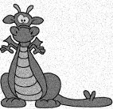
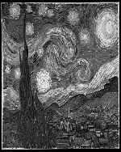
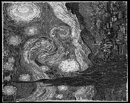

Uma imagem digital é uma representação numérica de uma imagem bidimensional, de forma a permitir seu armazenamento, transferência e processamento. Processamento de imagens é um tipo de processamento de dados em que tanto a entrada quanto a saída são imagens.
Podemos representar uma imagem digital através de uma matriz, em que cada um de seus elementos representa a intensidade de cor em um ponto (pixel) da imagem. Assim, seja f uma imagem digital qualquer, dizemos que o pixel na posição (x,y) tem intensidade f(x,y). Considerando imagens em tons de cinza, o valor de cada elemento da matriz representa uma intensidade de cinza. Quanto maior a intensidade, mais clara é a cor representada. Desta forma, a intensidade máxima representa a cor branca, enquanto a intensidade mínima representa a cor preta.
Neste laboratório, você deverá implementar 4 funções de processamento de imagem. Para cada função, tanto a entrada quanto a saída serão imagens no formato PGM. O formato PGM representa imagens em tons de cinza de forma matricial, em que a intensidade de cada pixel está no intervalo [0..MaxV], onde MaxV é intensidade máxima especificada no arquivo, ou seja, a intensidade que representa a cor branca. Por exemplo, para MaxV = 10, os pixels da imagem podem ter a cor preta, com intensidade 0, a cor branca, com intensidade 10, e mais 9 tons intermediários de cinza, representados pelas intensidades no intervalo [1..9]. O valor máximo para MaxV permitido no formato PGM é 255.
Os arquivos de casos de testes de entrada (*.in) e de saída (*.res) podem ser visualizados normalmente como imagens no ambiente Linux (com um duplo clique no arquivo ou usando um editor de imagens como o Gimp, por exemplo).
Disponibilizamos um código (clique para acessar) que possui as seguintes funções já implementadas:
int ler_pgm(int img[][400],int *W, int *H, int *MaxV, int *F, double *c, double *gama);
void escrever_pgm(int img[][400], int W, int H, int MaxV);
int main();
Você deverá fazer a implementação das funções de processamento de imagens utilizando os esboços das funções disponíveis no mesmo código fonte. Você não deve modificar as funções já existentes.
Para este problema, um arquivo PGM encontra-se no seguinte formato:
A seguir é mostrado um exemplo de arquivo PGM:
P2Abaixo são explicadas as quatro funções que devem ser implementadas.
void potencia(int img[][MAX_TAM], int W, int H, int MaxV, double c, double gama);
Esta função serve para mapear faixas estreitas de valores em faixas mais amplas. Diferentes monitores possuem diferentes fatores de correção gama, mostrando imagens diferentes. A equação abaixo descreve uma transformação de potência, aplicada em cada elemento da imagem f:
f'(x,y) = c × f(x,y)γPor exemplo, ao se aplicar este filtro em uma imagem f com MaxV = 10, usando os parâmetros c = 2 e γ = 0,7, as intensidades dos pixels são transformados da seguinte forma:
Um gama maior que 1 aumenta o contraste nos valores baixos de intensidade, enquanto um gama menor que 1, aumenta o contrate nos valores de intensidade mais altos. No exemplo do babuíno, abaixo, foi usado um gama de 0,7.
Observações:
| Imagem de entrada | Imagem de saída |
| P2 # 1 2 0.7 5 5 10 1 9 10 2 6 1 8 7 2 5 4 9 10 10 2 0 0 1 2 3 0 10 0 10 10 |
P2 5 5 10 2 9 10 3 7 2 8 7 3 6 5 9 10 10 3 0 0 2 3 4 0 10 0 10 10 |
| Imagem de entrada | Imagem de saída |
|---|---|
void Espelhamento(int img[][MAX_TAM], int W, int H);
Esta função espelha a metade direita da imagem na metade esquerda.
Exemplo 2: Espelhamento| Imagem de entrada | Imagem de saída |
| P2 # 2 5 5 10 1 9 10 2 6 1 8 7 2 5 4 9 10 10 2 0 0 1 2 3 0 10 0 10 10 |
P2 5 5 10 6 2 10 2 6 5 2 7 2 5 2 10 10 10 2 3 2 1 2 3 10 10 0 10 10 |
| Imagem de entrada | Imagem de saída |
|---|---|
void reducaoRuido(int img[][MAX_TAM], int W, int H, int MaxV);
Para este problema, definimos a vizinhança de um pixel (x,y) como o conjunto de pixels pertencentes à região 3x3 que tem centro em (x,y).
A função do Filtro Gaussiano é reduzir o ruído e/ou borrar a imagem. Ele é feito por meio de um filtro representado pela matriz abaixo:
Dado um pixel na posição (x,y), cuja intensidade atual é f(x,y), o novo valor de sua intensidade, f'(x,y), se dá pela soma da multiplicação "ponto-a-ponto" entre a região de vizinhança de (x,y) e o filtro dado acima. Por exemplo, suponha que queremos utilizar o filtro gaussiano no pixel P na posição (9, 21) da imagem de entrada.
O valor de intensidade no ponto P' na posição (9, 21) da imagem resultante após o filtro gaussiano é:
f'(9, 21) = ((1 * f(8, 20)) + (2 * f(9, 20)) + (1 * f(10, 20)) + (2 * f(8, 21)) + (4 * f(9, 21)) + (2 * f(10, 21)) + (1 * f(8, 22)) + (2 * f(9, 22)) + (1 * f(10, 22)))/16| Imagem de entrada | Imagem de saída |
| P2 # 3 10 10 10 6 2 5 10 10 10 7 8 4 8 8 8 9 10 10 10 4 3 10 1 10 2 0 10 10 10 5 4 4 7 10 3 5 10 10 10 7 2 8 7 10 10 10 10 10 10 10 10 10 7 8 10 6 10 10 10 5 9 7 4 5 2 3 10 10 10 4 2 9 6 3 4 0 10 10 10 3 4 0 4 0 3 3 10 10 10 10 3 1 5 8 1 3 10 10 10 10 3 7 6 |
P2 10 10 10 6 2 5 10 10 10 7 8 4 8 8 5 6 8 10 8 6 5 5 1 10 5 5 8 10 8 5 4 5 7 10 6 6 8 10 9 7 5 6 7 10 8 8 9 10 9 8 8 7 7 8 7 7 9 10 9 7 7 7 4 5 4 5 8 10 8 5 4 5 6 3 2 4 7 10 8 5 3 3 4 0 2 4 8 10 9 7 4 3 5 8 1 3 10 10 10 10 3 7 6 |
| Imagem de entrada | Imagem de saída |
|---|---|
|  |
void rotacao(int img[][MAX_TAM], int W, int H);
Esta função rotaciona a imagem 90° para a esquerda.
Exemplo 4: Rotação de 90°| Imagem de entrada | Imagem de saída |
| P2 # 4 5 5 10 1 9 10 2 6 1 8 7 2 5 4 9 10 10 2 0 0 1 2 3 0 10 0 10 10 |
P2 5 5 10 6 5 2 3 10 2 2 10 2 10 10 7 10 1 0 9 8 9 0 10 1 1 4 0 0 |
| Imagem de entrada | Imagem de saída |
|---|---|
|  |  |